01
Estudiantes Universitarios
Personas que buscan fortalecer sus conocimientos, descubrir nuevas tecnologías y conectar con profesionales de la industria.

Technology on Business es un congreso donde estudiantes, profesionales y empresas se reúnen para descubrir las tecnologías, ideas y tendencias que están transformando el futuro.
Con la temática "Master the Chaos", la edición 2026 invita a desarrollar las habilidades necesarias para liderar el cambio, innovar y convertir los desafíos en oportunidades.
impulsando la innovación y el talento tecnológico
esperados para la edición 2026
de conferencias, networking y experiencias
celebrando la innovación y la excelencia académica
Dos días para aprender, conectar con líderes de la industria y formar parte de una comunidad que impulsa la innovación y el crecimiento profesional.
Personas que buscan fortalecer sus conocimientos, descubrir nuevas tecnologías y conectar con profesionales de la industria.
Especialistas en desarrollo de software, infraestructura, datos, inteligencia artificial, ciberseguridad y transformación digital.
Fundadores de startups, emprendedores tecnológicos y personas interesadas en convertir ideas en proyectos con impacto.
Organizaciones que buscan acercarse al talento universitario, fortalecer su marca y generar oportunidades de colaboración.
Académicos y expertos que impulsan la innovación mediante investigación, transferencia de conocimiento y nuevas metodologías.
Cualquier persona apasionada por la tecnología, la innovación y los negocios que quiera aprender de expertos y ampliar su red.
Organizaciones que creen en el talento costarricense y se suman para hacer del ToB 2026 una experiencia inolvidable. Su apoyo impulsa a nuestra comunidad y fortalece el futuro de la tecnología en Costa Rica.
Gracias a nuestros sponsors por creer en el poder de la tecnología y la innovación. Su confianza y apoyo hacen posible que el ToB 2026 siga transformando la forma en que conectamos talento, ideas y oportunidades.




En el ToB tendrás la oportunidad de escuchar a expertos de la industria, descubrir tecnologías emergentes y conectar con personas que comparten tu pasión por la innovación, los negocios y el futuro digital.

V34Q+X9W, Centro de las Artes, Tecnológico de Costa Rica,
Provincia de Cartago, Cartago